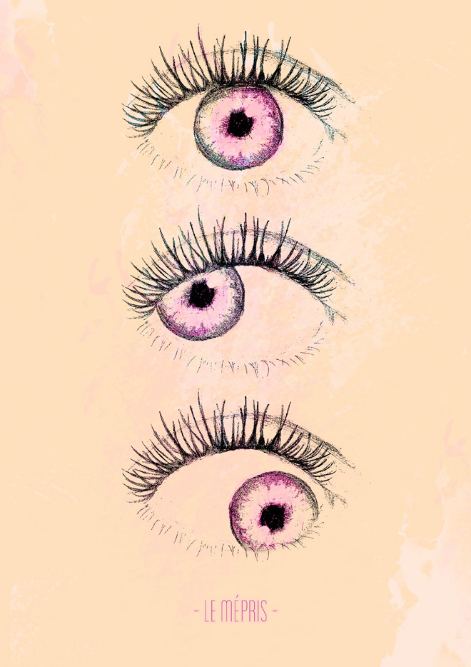

	<div id="portfolio" class="entry-single pageloader_inner wrapper clearfix">
    	<div id="entry-single">        
            <aside id="sidebar" class="right_float seperator_left">
            	<section class="sidebar_section">
                    <div class="entry-headline">
                        <div class="entry-title"><h4>Le Mépris</h4></div>
                        <div class="entry-date">Print</div>
                    </div>
                    
                    <div class="entry-info">
                        <p>Camille n'est pas très heureuse de ce long voyage de travail impromptu, loin de chez elle, parmi des inconnus. Durant le séjour, Paul Javal laisse le riche et séduisant producteur seul avec Camille, alors qu'elle, intimidée, insiste pour demeurer auprès de Paul. 
                        </p>
                        <p>
    À tort, Camille s'imagine que son mari la pousse dans le lit du producteur pour obtenir le travail de réécriture du scénario. De là naissent des malentendus, le mépris, et leur couple vole en éclats.
                        </p>
                    </div>
                </section>
            </aside>
            
            <article id="maincontent" class="left_float">
                
			</article> <!-- END #maincontent -->
    	</div>        
	</div>
